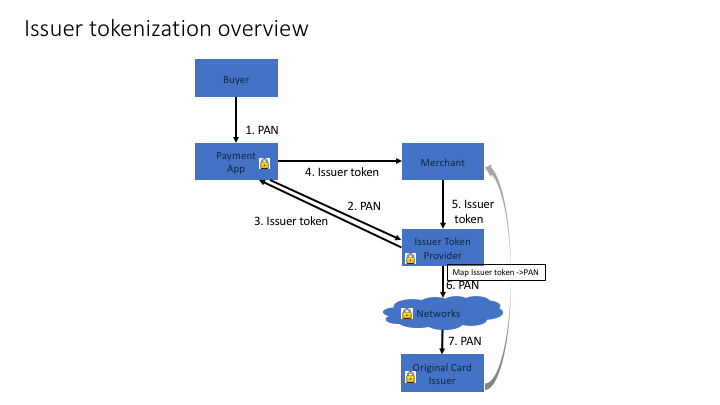
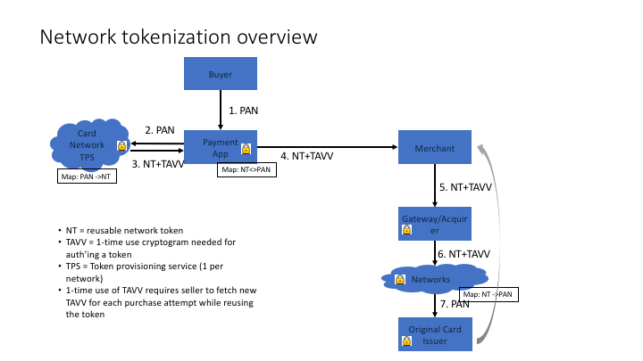

The Tokenized Card Payment specification describes the data formats used by the PaymentRequest API [[!PAYMENTREQUESTAPI]] to support payment by tokenized payment cards.
The working group maintains a list of all bug reports that the group has not yet addressed. Pull requests with proposed specification text for outstanding issues are strongly encouraged.
Sending comments on this document
If you wish to make comments regarding this document, please raise them as GitHub issues. Only send comments by email if you are unable to raise issues on GitHub (see links below). All comments are welcome.
This specification is a Payment Transaction Message Specification used by the PaymentRequest API [[!PAYMENTREQUESTAPI]] to support payment by tokenized payment cards.
Tokenization provides some advantages over traditional card payments - tokenized credentials are often narrowly scoped, for example single-use or merchant/amount/time scoped. Tokenized credentials also help alleviate some concerns about merchant data breaches since the merchant does not have the raw PAN. This provides some additional security for a consumer.
This specification relies on several other underlying specifications.
The payment method identifier string for the Tokenized Card Payment method is card-token.
This section describes payment method specific data that is supplied as part of the data
argument to the PaymentRequest constructor. This specification extends the BasicCardRequest (defined in [[!BASICCARD]]) with some additional fields required for tokenization.
enum TokenCardType { "emv", "issuer" };
dictionary TokenCardRequest : BasicCardRequest {
sequence<TokenCardType> supportedTokenTypes;
};
The TokenCardRequest dictionary contains the following fields:
supportedTokenTypessupportedTokenTypes field contains a sequence of token card types that the merchant
accepts. The values mean the following:
supportedNetworks) that represent the underlying PAN.A payment service may wish to use emv tokens if its infrastructure supports sending a token/cryptogram combination. Issuer tokens may be preferred in cases where the card is not emv-tokenizable or if the merchant is unable to handle emv tokens.
The supportedNetworks and supportedTypes fields are both optional.
If neither is provided then any card may be returned. If supportedNetworks
is provided then any card that matches one of the supported networks is returned.
If supportedTypes is provided then any card that matches one of the supported types is returned.
Implementations will determine how to match values of supportedTypes.
This specification covers a limited number of supportedTokens. There are other types of tokens such as gateway tokens, but because they involve substantially different flows of information (e.g., merchant onboarding), this specification does not cover them.
The TokenizedCardResponse dictionary contains the response from the PaymentRequest API when a user accepts payment with a Tokenized Payment Card payment method. This specification extends the BasicCardResponse (defined in [[!BASICCARD]]) with some additional fields required for tokenization. It should be noted that the "cardSecurityCode" from the BasicCardResponse will contain a card security code for issuer-based tokens, but will contain the cryptogram for network tokens. The combination of cardNumber (the token number) + cardSecurityCode (either cryptogram or security code - note that security code can be 3 or 4 digits) establishes a one-time use credential.
dictionary TokenizedCardResponse: BasicCardResponse {
required DOMString cardLast4;
DOMString tokenType;
DOMString tokenRequesterId;
};
The TokenizedCardResponse dictionary contains the following fields:
cardLast4cardLast4 field contains the last 4 digits of the original (non-token) primary account number (PAN) for the payment card. This may be used for display purposes during the purchase.tokenTypetokenType field contains the token type selected by the user. This is one of the values of supportedTypes.tokenRequesterIdtokenRequesterId field contains ID of the entity that requested the token from the network (likely the creator of the payment app). This field is only applicable when tokenType is "emv".
